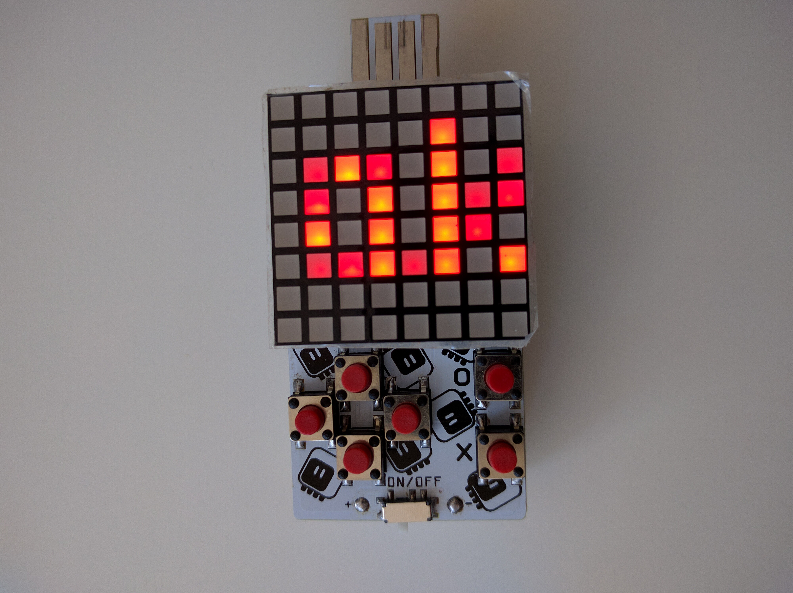

Slowing Down¶
Published on 2018-08-12 in PewPew Standalone.
The flickering problems are solved by slowing down the clock to a reasonable frequency.
What happened?
Well, the clock was running at its 48MHz and generating interrupt requests, but that doesn’t mean that the interrupts were being executed at that speed. It takes time to execute them. So they were running as often as possible, back-to-back. Which means that any other interrupt, or anything affecting the speed of execution at all, would affect how often they run, which would be visible as flickering.
The solution? Slow the clock down to a reasonable rate, so that there is plenty of time between the interrupts for executing other things. Like the user python code, for example. Yes, as a side effect, user code can now run.
It was a really basic mistake, I blame the late hour. In any case, it’s now fixed and I have the games running.

As a bonus, since I ended up not using the hardware PWM, I can use the old PCBs, of which I have 20.